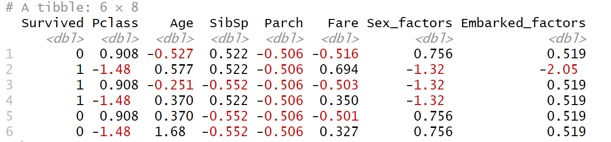

Logistic Regression
① 對feature資料進行z-score 標準化。(平均值為0，標準差為1)
因為在資料中，不同資料欄位與資料值所組成，他們分佈狀況可能都不盡相同，因此，就必須將特徵資料按比例縮放，讓資料落在某一特定的區間。
# Logistic regression
library(caret)
# 設定5-fold
lr_ctrl <- trainControl(method="cv", number=5, savePredictions="all", classProbs=TRUE)
# 設定Logistic regression model
logistic_model <- train(Survived ~ ., data = res$train, method="glm", family = "binomial", trControl = lr_ctrl)
library(caret)
# 設定5-fold
lr_ctrl <- trainControl(method="cv", number=5, savePredictions="all", classProbs=TRUE)
# 設定Logistic regression model
logistic_model <- train(Survived ~ ., data = res$train, method="glm", family = "binomial", trControl = lr_ctrl)
② 確認資料都是已經scaling。
head(Titanic_train_subset_scale)

目前欄位都為數值型資料